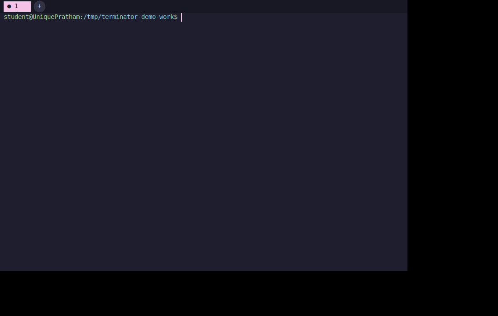
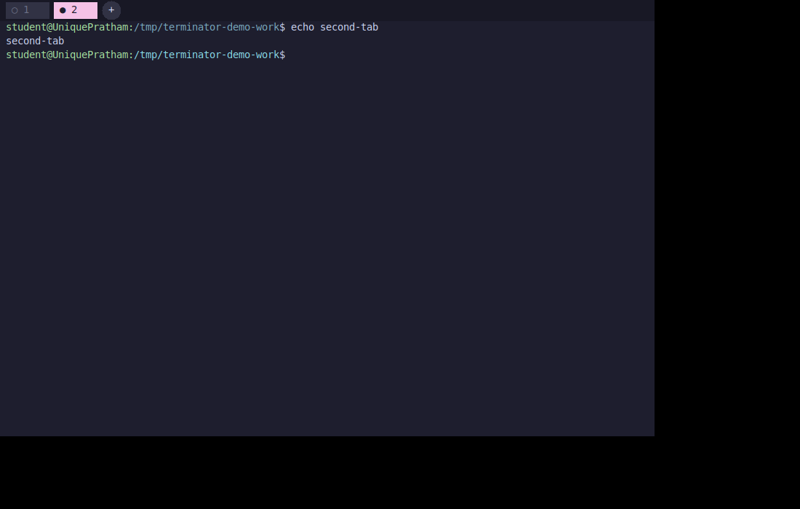
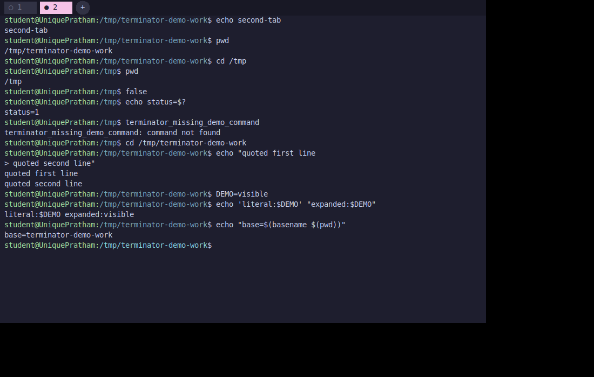
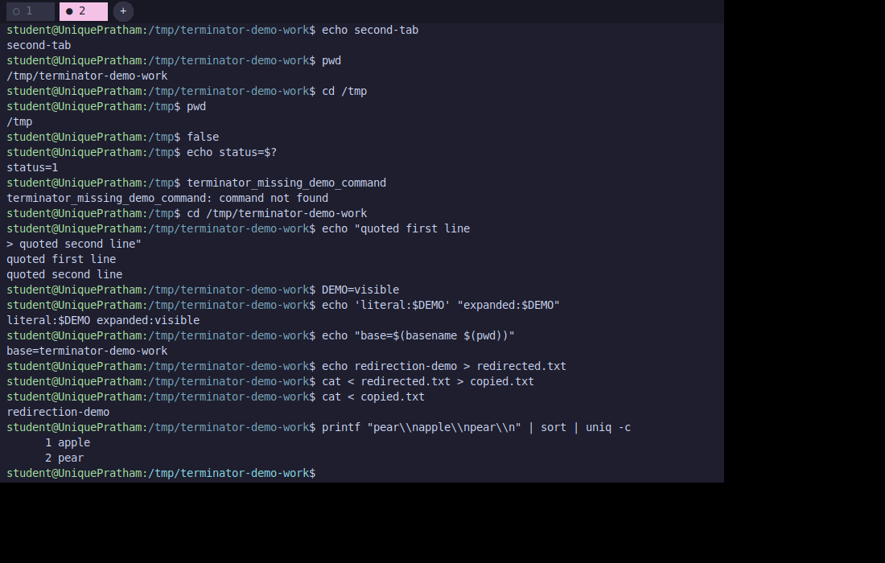
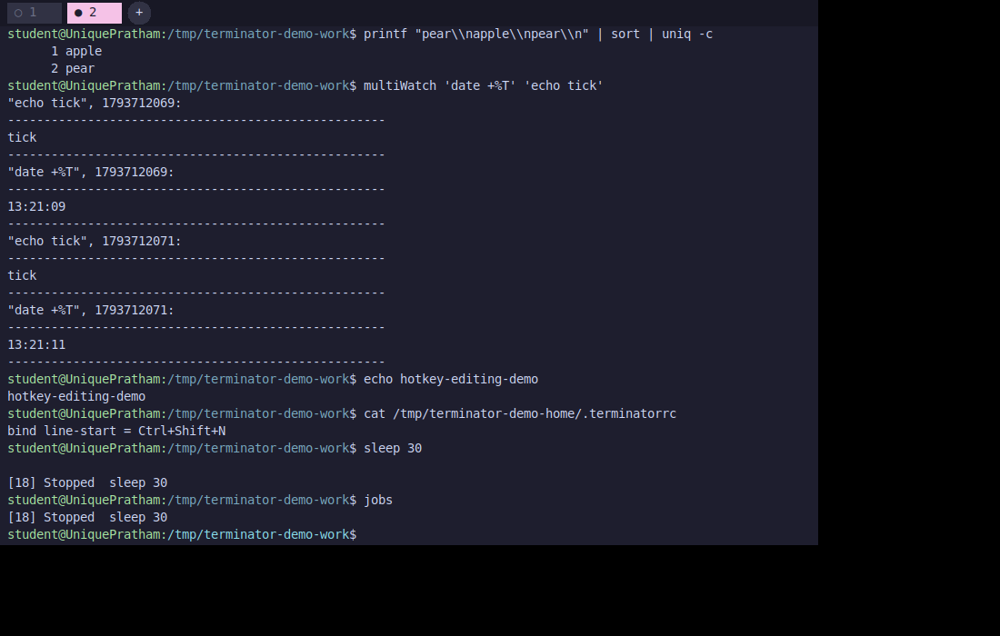
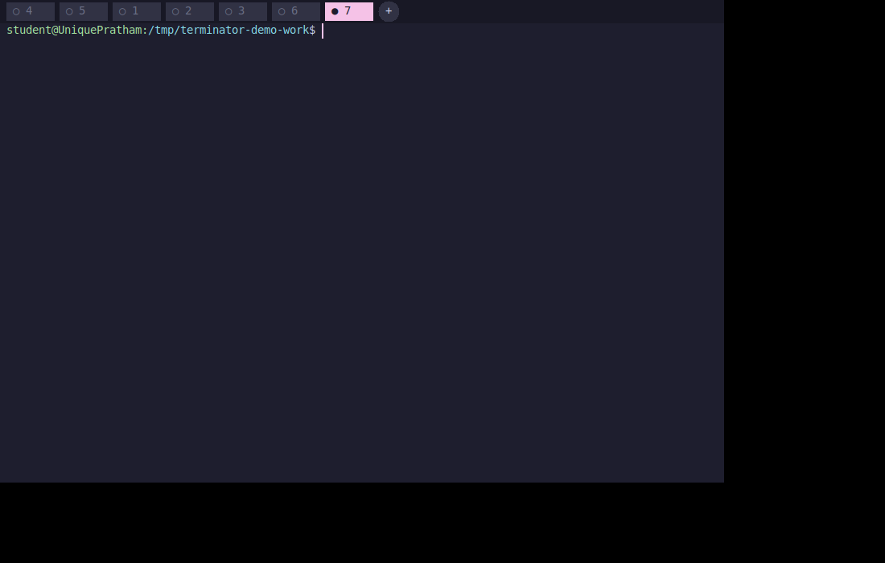
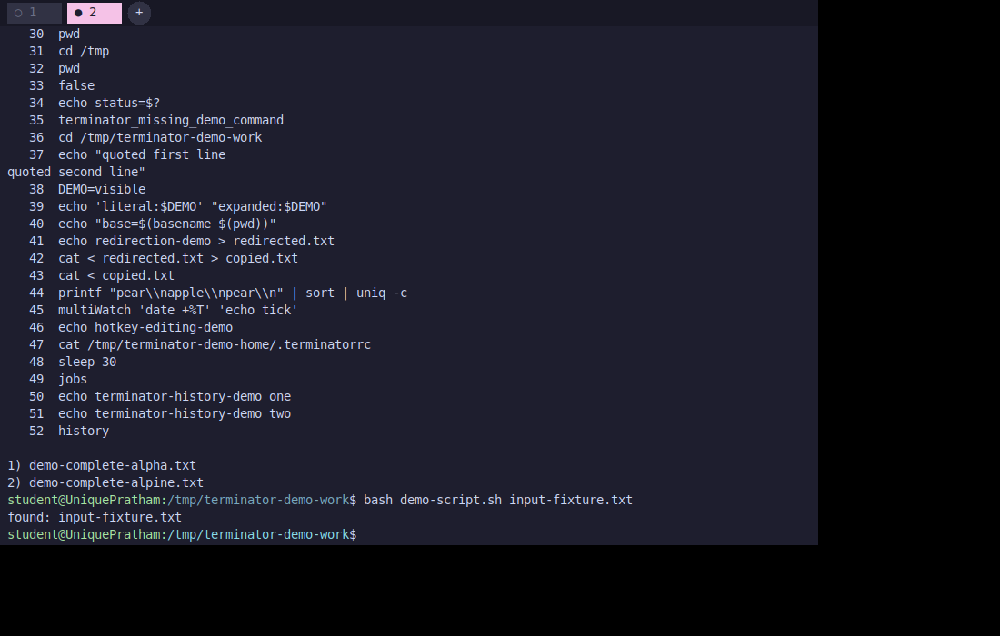

01 · Interface
Independent tabs
Create up to 16 tabs. Existing labels stay stable; new tabs reuse the lowest vacant number and join at the end.
Terminator is a terminal-style desktop app with its own command parser and shell. Explore the interface, see how commands flow through the system, and build it on Linux.

Commands are parsed and executed by the project. Tabs can run in worker threads or separate processes.
Create up to 16 tabs. Existing labels stay stable; new tabs reuse the lowest vacant number and join at the end.
Quote-aware parsing, escapes, variables, command substitution, and continued input for unfinished expressions.
Connect commands with pipelines and redirect input or output using file descriptors.
Inspect, stop, resume, and interrupt work in the supported shell model.
Shared searchable history, filename completion, configurable keys, and insert/overwrite editing.
Choose worker threads or isolated worker processes connected through framed pipes.
Examples of the desktop interface and shell features implemented in the project.






The GUI and shell are separate layers; the same shell engine serves both worker modes.
Terminator uses ordinary pipes, not a PTY. Full-screen terminal programs and complete Bash compatibility are outside its scope.
You need a C11 compiler, GNU Make, Xlib/Xft development headers, and an X server.
Install dependencies, clone the repository, build, and start either worker mode. A desktop X session supplies the display.
sudo apt update
sudo apt install build-essential make pkg-config libx11-dev libxft-dev
git clone https://github.com/UniquePratham/Terminator.git
cd Terminator
make
./terminator./terminator useProcess=Truemake test